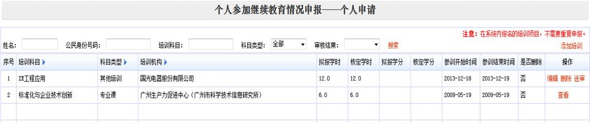

各位同事：上午好！
广州市2014年专业技术资格评审工作已经开始，门户系统也已开放。
根据文件指引，系统上受理送省（外）评委会的申报评审材料截止时间为9月1日17:00时！
请需要申报职称评审的相关同事在网络系统上完成申报，并将纸质申报材料到法人单位审核。
另附上查询各职称申报资格条件的查询网址，仅供参考：http://www.hrssgz.gov.cn/gzzc/zgtj/
请各部门信息员转发给相关（技术）人员，如有疑问请联系，谢谢！
人力资源中心
刘礼林
内线：5184
短号：68307
手机：15919677307
发件人: 刘礼林
发送时间: 2014-05-16 17:06
收件人: ^各部门信息员; ^ 制造中心管理人员; %信息部所有人; ^工程部电子PIE组; ^工程部电子工程组; ^工程部夹具管理组; ^工程部声学PIE组; ^工程部声学工程组; %设备部所有人;
%预研发中心所有人; ^国际音响技术部
抄送: 谭钻平; 胡晓芹; %人力资源中心所有人
主题: 关于做好2014年专业技术人员继续教育年度验证工作的通知
各位同事：下午好！
根据附件一要求，请于6月30日前将2014年参加继续教育的所有公需科目、专业科目和其他培训科目在“广州市专业技术人员继续教育管理系统”中进行登记
（已由继续教育基地登记的不需重复登记），由“系统”完成年度验证。
从2013年起，专业技术人员未通过继续教育年度验证的，将影响参加高一级专业技术资格的评审。
另，根据附件二，专业课也已开始报名开班，由于报名必须在课程开课前，
因此请需要参与继续教育、完成本年度周期验证的同事务必于5月21日（周三）下班前将报名信息报至我处！
报名表的件附件二底部！（报名表只有四个专业，由广州无线电集团有限公司组织的2个专业课程培训，如有需要报名的同事，请直接与许鸿平联系，联系方式在附件二）
请各部门信息员转发给相关（技术）人员，如有疑问请联系，谢谢！
人力资源中心
刘礼林
内线：5184
短号：68307
手机：15919677307
发件人: 胡晓芹
发送时间: 2014-05-16 11:20
收件人: 刘礼林
主题: 转发: 关于做好2013年专业技术人员年度验证工作的通知
请参考
发件人: 胡晓芹
发送时间: 2014年1月10日 9:17
收件人: 杨军(质管)
主题: 答复: 关于做好2013年专业技术人员年度验证工作的通知
杨主管：2013年度验证已通过。你可上网查询。
发件人: 杨军(质管)
发送时间: 2014年1月10日 8:43
收件人: 胡晓芹
主题: 答复: 关于做好2013年专业技术人员年度验证工作的通知
已经完成了，专业课的验证好像还没在网页上有看到？

发件人: 胡晓芹
发送时间: 2014年1月7日 15:18
收件人: ^各部门信息员; ^国际音响技术部; ^ 制造中心管理人员; %信息部所有人; ^工程部电子PIE组; ^工程部电子工程组; ^工程部夹具管理组; ^工程部声学PIE组; ^工程部声学工程组; %设备部所有人; %预研发中心所有人
抄送: 谭钻平; %人力资源中心所有人
主题: 关于做好2013年专业技术人员年度验证工作的通知
各位同事：下午好！
根据文件要求，请于本月31日前将2013年参加继续教育的所有公需科目、专业科目和其他培训科目在“广州市专业技术人员继续教育管理系统”中进行登记（已由继续教育基地登记的不需重复登记），由“系统”完成年度验证。
从2013年起，专业技术人员未通过继续教育年度验证的，将影响参加高一级专业技术资格的评审。
请各部门信息员转发给相关人员，如有疑问请联系，谢谢！
人力资源中心目标：以人为本，促进企业与员工共同发展；
人力资源中心使命：打造最优秀的人力资源团队，实施百年国光的人才战略
人力资源中心：胡晓芹
内线：3719（外线：020-28609719）
短号：660383
{kind=link}
{kind=link}